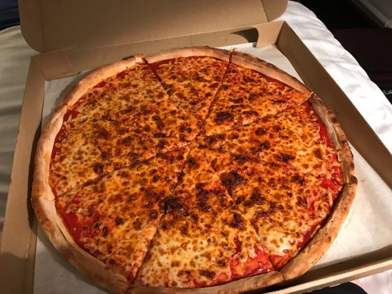

Pizza
Description
Delight in the heavenly creation that is pizza, with its thin, crispy crust adorned with a luscious tomato sauce and a generous layer of melted cheese. Customizable to your liking, this culinary masterpiece is topped with an array of delicious ingredients, from savory meats to fresh vegetables, creating a symphony of flavors that dance on your taste buds. Experience pure satisfaction with every slice of this timeless favorite.
Ingredients
- Pizza dough (store-bought or homemade)
- Pizza sauce or marinara sauce
- Mozzarella cheese (shredded or fresh)
- Toppings of your choice:
- Pepperoni
- Sausage
- Mushrooms
- Onions
- Bell peppers
- Olives
- Tomatoes
- Spinach
- Fresh basil leaves
- Pineapple (for Hawaiian pizza)
- Ham (for Hawaiian pizza)
- Anchovies (if you like them)
- Any other desired toppings
Steps
- Preheat the oven.
- Prepare the dough (store-bought or homemade).
- Roll out the dough.
- Spread pizza sauce on the dough.
- Add mozzarella cheese and desired toppings.
- Bake the pizza in the preheated oven.
- Optional: Brush the crust with olive oil and add seasonings.
- Allow the pizza to cool, then slice and serve.